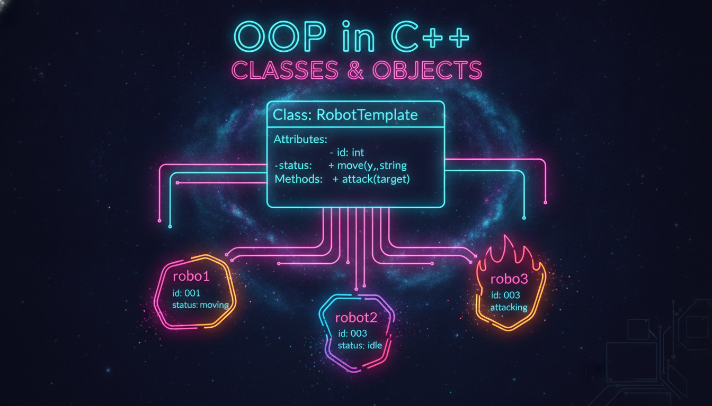

Класи, об'єкти, члени класу, модифікатори доступу

Об'єктно-орієнтоване програмування (ООП) — це парадигма, що організовує код у вигляді об'єктів, які містять дані та методи для роботи з цими даними.
Чотири основні принципи ООП:
#include <iostream>
#include <string>
class Rectangle {
// Приватні члени (доступні тільки всередині класу)
private:
double width;
double height;
// Публічні члени (доступні ззовні)
public:
// Сеттери
void setWidth(double w) {
if (w > 0) width = w;
}
void setHeight(double h) {
if (h > 0) height = h;
}
// Геттери
double getWidth() const { return width; }
double getHeight() const { return height; }
// Методи
double getArea() const {
return width * height;
}
double getPerimeter() const {
return 2 * (width + height);
}
};
int main() {
// Створення об'єкта
Rectangle rect;
rect.setWidth(5.0);
rect.setHeight(3.0);
std::cout << "Площа: " << rect.getArea() << std::endl;
std::cout << "Периметр: " << rect.getPerimeter() << std::endl;
return 0;
}